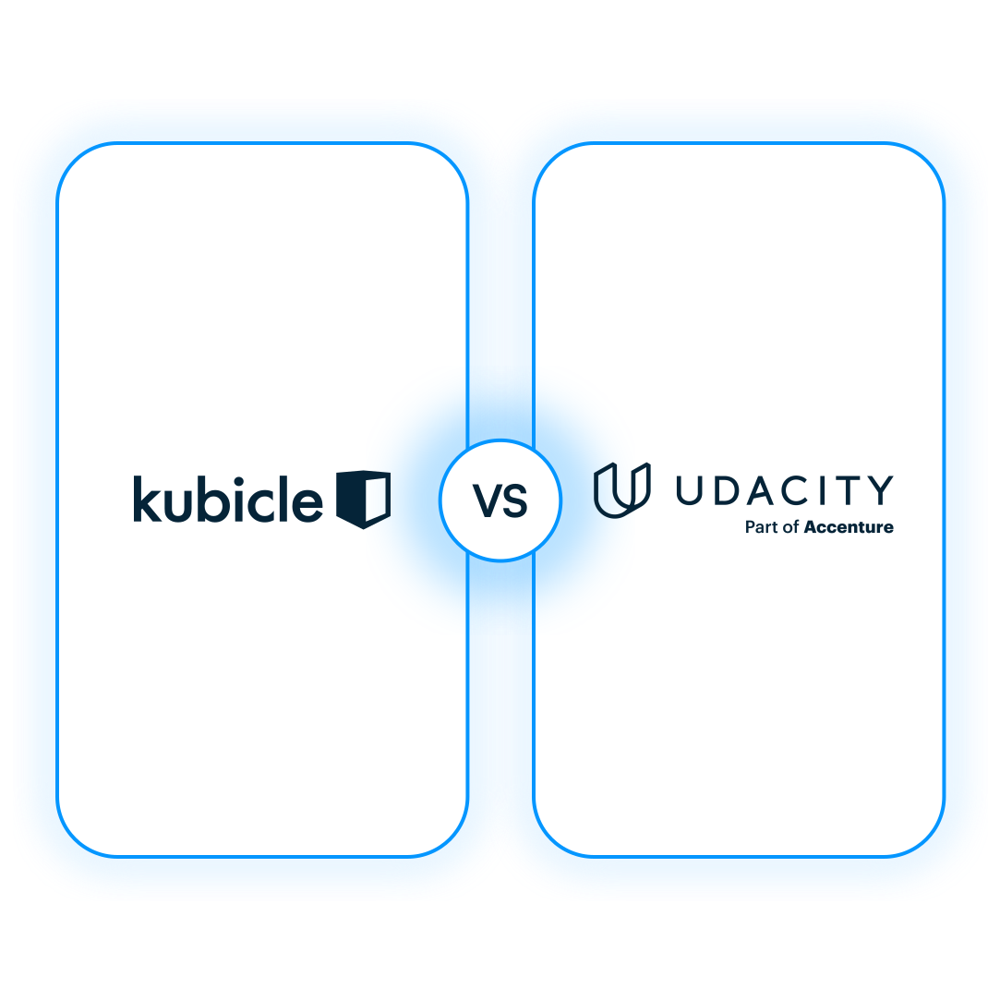
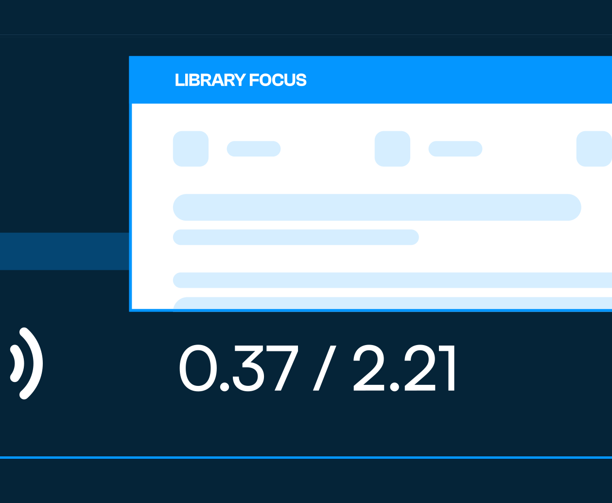
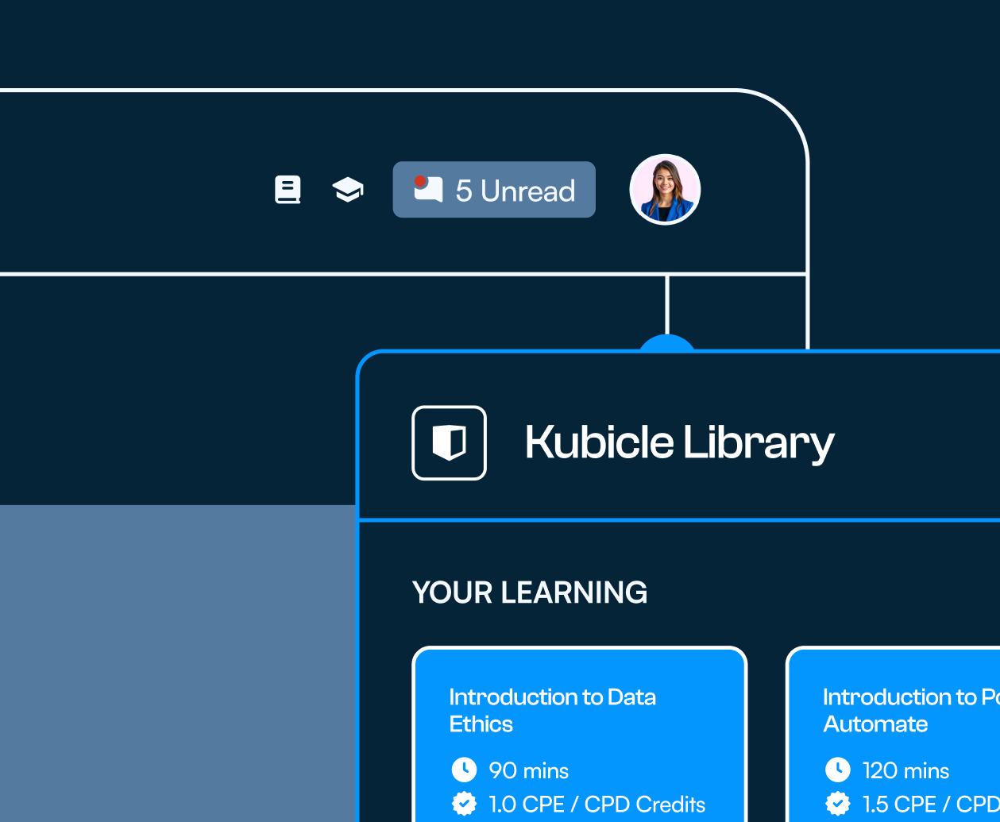
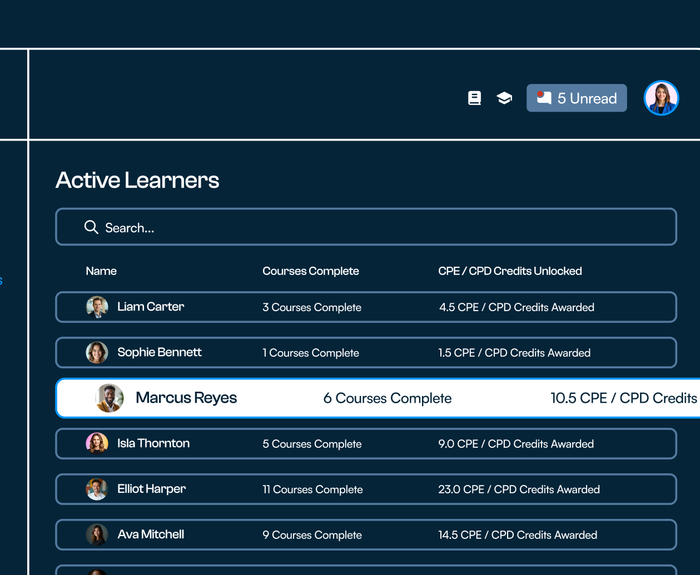

George N
Co‑Owner
The fact that everything is extremely detailed and makes sense. It is not a case of needing assistance constantly. It is clear to understand and gives enough information to ensure success.
Jun 12, 2025
When it comes to mastering data literacy, choosing the right online training platform is crucial. Here is how Kubicle stacks up against some of the top‑rated data literacy platforms available online.

Kubicle and Udacity both provide online learning platforms that enable businesses and individuals to acquire key skills in data and analytics. The key difference between the two relates to the content on each platform and how it is presented. Kubicle's library balances broad, non‑technical courses on data and analytics subjects with detailed courses on popular data and analytics software. Udacity's courses focus more on data science related subjects and often contain specific applications and more advanced features such as coding. Kubicle's courses are short and can be completed in hours or less, while Udacity's courses take the form of nanodegrees, expected to be completed over the course of multiple weeks or months.
A clear view of how the two platforms differ across the things that decide a rollout.
| Comparison | RecommendedKubicle | Udacity |
|---|---|---|
| Library focus | Broad, accessible courses on data and analytics. Detailed courses on relevant software applications. | More technical, code‑based courses on data and analytics. Less detailed courses on software applications. Courses are long programs taking weeks or months to complete. |
| Content production | In‑house content developed by subject experts. | In‑house content developed by subject experts. |
| Diagnostic skill checks | Used to gauge proficiency and generate focused course recommendations. | Pre‑assessments available for enterprise customers. |
| Exercises & lesson files | Exercises in every software course; relevant lessons include before and after files. | Courses contain projects, long‑form exercises that apply skills from lessons. |
| End‑of‑course exams | Every course has a cheat‑proof exam with multiple choice and dataset questions. Passing awards the certificate. | No exams at the end of courses. |
| CPE/CPD accredited certificates | ||
| Customer success | ||
| Custom content | ||
| Divide courses into semesters | ||
| Learning groups | ||
| Version control | ||
| Pacing recommendations | ||
| Reports & analytics | ||
| Compliance with ISO 27001 & GDPR | ||
| API access | ||
| SSO |
Kubicle is trusted by people from the world's biggest and best‑known companies. The reason is focus. Our library is concentrated on the specific subjects in data analytics that help companies and individuals prepare for the future of work. Udacity's offering takes a different shape, as covered above.

Our platform starts with a questionnaire that identifies skill gaps and recommends the courses that will fill them effectively. Beyond that, our customer success team can build a semester for you, a series of courses to be completed over a defined period. All of our content is produced in‑house by subject experts based on real‑world experience.

If our existing library does not meet your specific needs, we can discuss and develop content requirements just for you. Udacity does not generally engage in such processes. For organisations with niche workflows or proprietary tools, that difference is the difference between a generic rollout and a program your people actually use.
We identify appropriate courses for each learner using our diagnostic skill check, which surfaces gaps and recommends the courses that close them. Udacity relies primarily on automated recommendations or self‑selection. On top of that, every Kubicle course has a substantive exam that must be passed to earn the certificate; this is not consistent across Udacity.

We give administrators the tools to help learners complete their courses. Admins can divide learners into groups and split courses into semesters, building a realistic plan to follow. They can also control which version of a software application learners use, since we support multiple versions of common applications, the kind of detail that matters when half your team is on Excel 365 and the other half is on a corporate‑managed older release.
The fact that everything is extremely detailed and makes sense. It is not a case of needing assistance constantly. It is clear to understand and gives enough information to ensure success.
My experience with Kubicle has been highly positive and intellectually rewarding. The learning modules are well‑structured, concise and easy to follow. I appreciated the practical approach, focused on real‑world applications rather than theoretical concepts. Each lesson is accompanied by interactive quizzes that reinforce understanding and track progress.
We have had the pleasure of working with Kubicle for several years, and their support and professionalism have consistently been exceptional. We look forward to continuing this valuable partnership. The ever‑evolving Kubicle platform has been a tremendous resource in enhancing our employees' knowledge and skills.
Kubicle allows me to build my fluency in data, the variety of courses really helped to enrich my existing knowledge pool. Whilst also building in new skills, it helped me keep my old skills sharpened. As a business analyst this was really useful for me.
Through Kubicle, I am able to accommodate a diverse group of student skills. Students can replay or slow down videos when they need to solidify knowledge, just as much as they can skip concepts they have mastered. The examples are practical and the learning works. My classes are more robust and my students are ready to join the workforce at a competitive level.
I really like how interactive and easy to use the Kubicle UI is. Ease of use and training are key to high adoption rates with any software, and Kubicle excels in both. A vast library of NASBA and CPE/CPD accredited content, an easy UI and a truly dedicated Customer Success team. The implementation was quick and effective, and all integrations work excellently.
Book a 30‑minute walkthrough with a Kubicle program designer. We will run the same comparison against the platform you are using today, with your data and your team's roles.